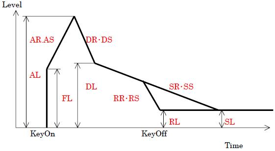

MML Reference - Envelope
This command can set the software envelope data.
Format
When you write those command, you must write in the beginning of a line.
E
No,
fl,
ar,
dr,
dl,
sr,
rr
Ex
No,
fl,
ar,
as,
al,
dr,
ds,
dl,
sr,
ss,
sl,
rr,
rs,
rl
Input
| Input | Range | Default
(when Ex command) | |
|---|
| No | 0 to 23 | - | Setting envelope number for the music data. |
| fl | 0 to 255 | - | First level |
| ar | 0 to 255 | - | Attack rate |
| as | -128 to 127 | 1 | Attack speed |
| al | 0 to 255 | 255 | Attack level |
| dr | 0 to 255 | - | Decay rate |
| ds | -128 to 127 | -1 | Decay speed |
| dl | 0 to 255 | - | Decay level |
| sr | 0 to 255 | - | Sustain rate |
| ss | -128 to 127 | -1 | Sustain speed |
| sl | 0 to 255 | 0 | Sustain level |
| rr | 0 to 255 | - | Release rate |
| rs | -128 to 127 | -1 | Release speed |
| rl | 0 to 255 | 0 | Release level |

Explanation
This command can set the envelope data.
This is common data for the music and effect.